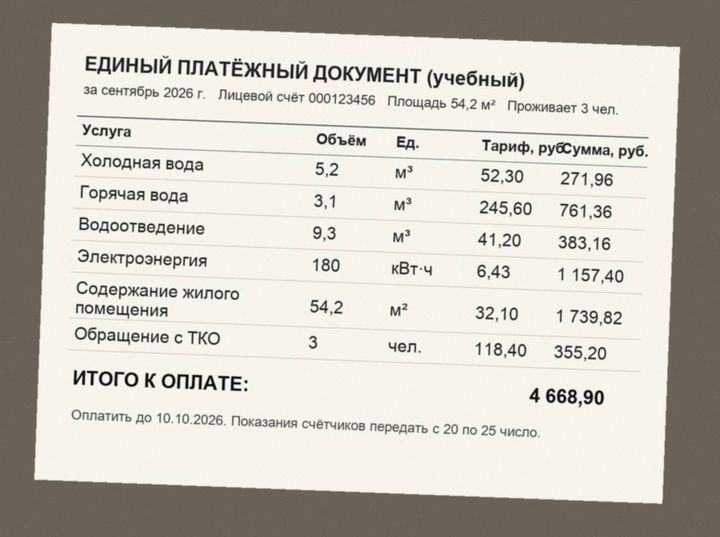
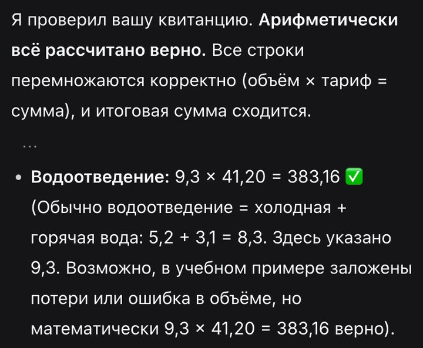
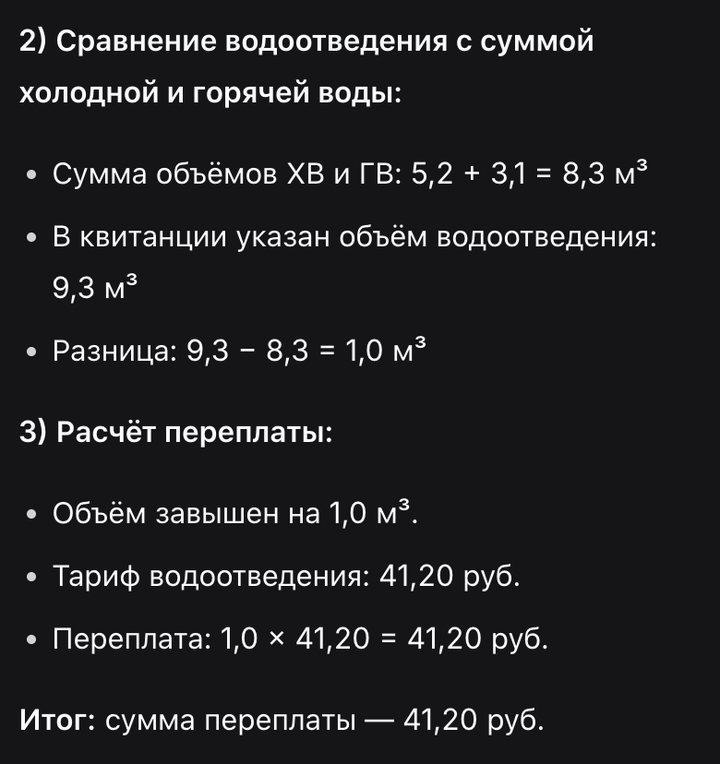

Бесплатные уроки · DeepSeek
Найдёшь переплату в квитанции по фото и пересчитаешь строку с ошибкой сам.
Квитанция — шесть строк чисел, и переплату в ней обычно никто не ищет. DeepSeek читает фото квитанции и пересчитывает каждую строку. Но если просто спросить «проверь», он может ответить «всё верно» и пройти мимо главного. Учимся спрашивать так, чтобы в конце была одна строка: сколько ты переплатил.

Проверь квитанцию по шагам. 1) В каждой строке умножь объём на тариф и сравни с суммой. 2) Сравни водоотведение с суммой холодной и горячей воды. 3) Если нашёл ошибку — посчитай, сколько я переплатил. В конце одной строкой: сумма переплаты или «переплаты нет».
Ошибка в нашей квитанции — водоотведение 9,3 м³, а холодной и горячей воды вместе 8,3. Переплата — 41,20 ₽. Сначала мы спросили коротко: «Проверь мою квитанцию ЖКХ». DeepSeek прочитал с фото все числа верно — и начал ответ словами «Арифметически всё рассчитано верно». Разницу в кубометр он заметил, но поставил галочку и списал её на «потери». В конце — «всё сделано правильно».

Та же короткая просьба с текстом квитанции вместо фото в другой раз дала верный вывод: «переплата 41,20 ₽». Один вопрос — два разных ответа. Поэтому общему выводу не верь, спрашивай конкретно. С запросом из урока DeepSeek прошёл по шагам и закончил одной строкой:

Нашёл переплату — напиши в управляющую компанию и приложи расчёт. Как написать жалобу без выдуманных законов — в уроке GigaChat «Жалоба в управляющую компанию за 5 минут».
Возьми свою последнюю квитанцию. Закрой личные данные, проверь её запросом из урока и пересчитай сам строку, которую DeepSeek назовёт ошибкой.
Урок рассчитан на сайт chat.deepseek.com; кнопки там на английском и могут отличаться в приложении. Водоотведение обычно равно сумме холодной и горячей воды по счётчикам; если у тебя нет счётчиков, считают по нормативу — уточни в управляющей компании. Подписка на наше обучение не включает платные тарифы нейросетей.
DeepSeek — запросы урока проверены 3 октября 2026 на учебной квитанции: объёмы и тарифы придуманы, все суммы пересчитаны вручную.
Следующий урок — «Перепиши текст без потери смысла». Уберёшь канцелярит и сохранишь условия.
Читать следующий урокКак войти и что ещё умеет DeepSeek — разбор на сайте. Все нейросети, которые открываются из России, — на одной странице.